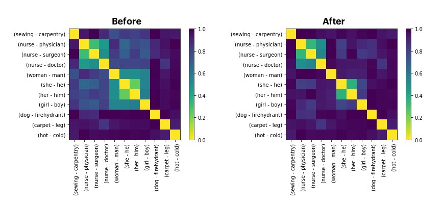

Debiasing Projections
In this example we'd like to discuss the effectiveness of debiasing techniques in word embeddings. This example is heavily inspired by the "Lipstick on a Pig" paper by Hila Gonen and Yoav Goldberg.
Meaning¶
In word embedding space you might wonder if a direction in embedding space might represent meaning.
- \(v_{man}\) represents the word embedding for "man" .
- \(v_{woman}\) represents the word embedding for "woman" .
- You could argue that the axis \(v_{man} - v_{woman}\) might represent "gender".
One side of the "gender" axis would represent the male gender while the other end represents the female gender. This spectrum might allow you to guess if words are more "male" or more "female". It can also be used as a measurement for bias in language.
Similarity¶
There are some axes that we might come up with that should be similar to this gender axis, like:
- \(v_{he} - v_{she}\)
- \(v_{king} - v_{queen}\)
- \(v_{brother} - v_{sister}\)
It would be highly unfortunate though if the following pairs of words would display similarity:
- \(v_{nurse} - v_{physician}\)
- \(v_{nurse} - v_{surgeon}\)
- \(v_{nurse} - v_{doctor}\)
Being a nurse should not imply that you are a woman just like that being a surgeon should not imply that you are a man. It'd be a shame if we were using embeddings where such stereotypical bias is present. Unfortunately, it's likely in the embeddings. Historically, women have not gotten the same opportunities as men. This is bound to be reflected on websites like Wikipedia which are a common source of data to train word embeddings. So let's make a distance chart to confirm if this is the case.
Word Pairs
stereotype_pairs = [
('sewing', 'carpentry'),
('nurse', 'physician'),
('nurse', 'surgeon'),
('nurse', 'doctor'),
]
appropriate_pairs = [
('woman', 'man'),
('she', 'he'),
('her', 'him'),
('girl', 'boy')
]
random_pairs = [
('dog', 'firehydrant'),
('carpet', 'leg'),
('hot', 'cold'),
]
all_pairs = [stereotype_pairs, appropriate_pairs, random_pairs]
from whatlies import Embedding, EmbeddingSet
from whatlies.language import FasttextLanguage
lang_ft = FasttextLanguage("cc.en.300.bin")
flatten = lambda l: [item for sublist in l for item in sublist]
def calc_axis(pair_list, language_model):
return [language_model[t1] - language_model[t2] for (t1, t2) in pair_list]
def make_correlation_plot(pairs, language_model, metric="cosine"):
axes = [calc_axis(p, language_model) for p in pairs]
emb_pairs = EmbeddingSet(*flatten(axes))
emb_pairs.plot_distance(metric=metric)
make_correlation_plot(pairs=all_pairs, language_model=lang_ft)
This code generates a similarity chart for fasttext embeddings, shown below.

Notice, that we indeed see correlation. The "gender" direction seems to correlate with the "doctor-nurse" direction. We'd prefer if it simply were zero.
Projections¶
We observe bias that we do not want to have. So it's natural to ask: can we remove it?
There is a popular technique that proposes to filter out the "gender"-direction. If we can quantify the gender direction then we might also be able to project all the vectors in our set away from it. The 2D plot below demonstrates this idea.
Plot Code
from whatlies import Embedding
import matplotlib.pylab as plt
man = Embedding("man", [0.5, 0.1])
woman = Embedding("woman", [0.5, 0.6])
king = Embedding("king", [0.7, 0.33])
queen = Embedding("queen", [0.7, 0.9])
man.plot(kind="arrow", color="blue")
woman.plot(kind="arrow", color="red")
king.plot(kind="arrow", color="blue")
queen.plot(kind="arrow", color="red")
(queen - king).plot(kind="arrow", color="pink", show_ops=True)
(man | (queen - king)).plot(kind="arrow", color="pink", show_ops=True)
plt.axis('off');

In this example you can see that if we project \(v_{man}\) away from the \(v_{queen} - v_{king}\) axis we get a new vector \(v_{man} | (v_{queen} - v_{king})\).
The 2D example also demonstrates that we might achieve:
This suggests that we can use linear algebra to "filter" away the gender information as well as the gender bias.
Post-Processing¶
def make_debias_correlation_plot(pairs, language_model, metric='cosine'):
# Calculate the embeddings just like before.
axes = [calc_axis(p, language_model) for p in pairs]
emb_pairs = EmbeddingSet(*flatten(axes))
# Calculate the "gender"-direction
norm_emb = EmbeddingSet(
(language_model['man'] - language_model['woman']),
(language_model['king'] - language_model['queen']),
(language_model['father'] - language_model['mother'])
).average()
# Project all embeddings away from this axis.
emb_pairs = emb_pairs | norm_emb
# Plot the result.
emb_pairs.plot_distance(metric=metric)
make_debias_correlation_plot(pairs=all_pairs, language_model=lang_ft)
We'll now display the "before" as well as "after" chart.

It's not a perfect removal of the similarity. But we can confirm that at least visually, it seems "less".
Across Languages¶
One benefit of this library is that it is fairly easy to repeat this exercise for different language backends. Just replace the language_model with a different backend. Here's the results for three backends; a large English spaCy model, FastText and a large English BytePair model.

Relative Distances¶
The results look promising but we need to be very careful here. We're able to show that on one bias-metric we're performing better now. But we should not assume that this solves all issues related to gender in word embeddings. To demonstrate why, let's try and use a debiased space to predict gender using standard algorithms in scikit-learn.
As a data source we'll take two gendered word-lists. You can download the same word-lists here and here. These wordlists are subsets of the wordlists used in the Learning Gender - Neutral Word Embeddings paper. The original, and larger, datasets can be found here.
import pathlib
from whatlies.transformers import Pca, Umap
from whatlies.language import SpacyLanguage, FasttextLanguage
male_word = pathlib.Path("male-words.txt").read_text().split("\n")
female_word = pathlib.Path("female-words.txt").read_text().split("\n")
lang = FasttextLanguage("cc.en.300.bin")
e1 = lang[male_word].add_property("group", lambda d: "male")
e2 = lang[female_word].add_property("group", lambda d: "female")
emb_debias = e1.merge(e2) | (lang['man'] - lang['woman'])
Next, we'll use the fasttext language backend as a scikit-learn featurizer. You can read more on this feature here.
from sklearn.svm import SVC
from sklearn.pipeline import Pipeline
# There is overlap in the word-lists which we remove via `set`.
words = list(male_word) + list(female_word)
words = list(set(words))
labels = [w in male_word for w in words]
# We use our language backend as a transformer in scikit-learn.
pipe = Pipeline([
("embed", lang),
("model", SVC())
])
This pipeline can now be used to make predictions. Currently we do not perform any debiasing, so let's have a look at how well we can predict gender now.
Method I: Biased Embedding, Biased Model¶

The code below runs the schematic drawn above.
from sklearn.model_selection import train_test_split, GridSearchCV
from sklearn.metrics import classification_report
X_train, X_test, y_train, y_test = train_test_split(words,
labels,
train_size=200,
random_state=42)
y_pred = pipe.fit(X_train, y_train).predict(X_test)
print(classification_report(y_pred, y_test))
This gives us the following result:
precision recall f1-score support
False 0.87 0.92 0.90 93
True 0.94 0.89 0.91 116
accuracy 0.90 209
macro avg 0.90 0.91 0.90 209
weighted avg 0.91 0.90 0.90 209
It seems that the information that is in the embeddings now give us a 90% accuracy on our test set.
Method II: UnBiased Embedding, Biased Model¶
If we now apply debiasing on the vectors then one might expect the old model to no longer be able to predict the gender.

X, y = emb_debias.to_X_y('group')
X_train, X_test, y_train, y_test = train_test_split(X, y,
train_size=200,
random_state=42)
y_pred = pipe.steps[1][1].predict(X_test)
print(classification_report(y_pred, y_test == 'male'))
This gives the following result:
precision recall f1-score support
False 0.97 0.73 0.83 131
True 0.68 0.96 0.79 78
accuracy 0.81 209
macro avg 0.82 0.84 0.81 209
weighted avg 0.86 0.81 0.82 209
We're using the same model as before, but now we're giving it the debiased vectors to predict on. Despite being trained on a different dataset, we're still able to predict 81% of the cases accurately. This does not bode well for our debiasing technique.
Method III: UnBiased Embedding, UnBiased Model¶
We can also try to create a model that is both trained and applied on the unbiased vectors.

y_pred = SVC().fit(X_train, y_train).predict(X_test)
print(classification_report(y_pred, y_test))
precision recall f1-score support
female 0.80 0.83 0.81 94
male 0.86 0.83 0.84 115
accuracy 0.83 209
macro avg 0.83 0.83 0.83 209
weighted avg 0.83 0.83 0.83 209
If we train a model on the debiased embeddings and also apply it to another debiased set we're able to get 83% of the cases right. We were hoping more around 50% here.
Conclusion¶
If seems that after using linear projections as a debiasing technique we're able to remove the gender information of the word embeddings. This is based on cosine distance. However, if we use the debiased embeddings to predict gender it seems that we still have a reasonable amount of predictive power.
This demonstrates that the debiasing technique has a limited effect and that there's plenty of reasons to remain careful when applying word embeddings.